Having seen how acetyl-CoA is formed from pyruvate, we are ready to examine the citric acid cycle. An overview of how the cycle functions will be helpful. First we note a fundamental difference between glycolysis and the citric acid cycle. Glycolysis takes place by a linear sequence of enzyme-catalyzed steps, whereas the sequence of reactions in the citric acid cycle is cyclical. To begin a turn of the cycle (Fig. 15-7), acetyl-CoA donates its acetyl group to the four-carbon compound oxaloacetate to form the six-carbon citrate. Citrate is then transformed into isocitrate, also a six-carbon molecule, which is dehydrogenated with loss of CO2 to yield the five-carbon compound aketoglutarate. The latter undergoes loss of CO2 and ultimately yields the four-carbon compound succinate and a second molecule of CO2. Succinate is then enzymatically converted in three steps into the fourcarbon oxaloacetate, with which the cycle began; thus, oxaloacetate is ready to react with another molecule of acetyl-CoA to start a second turn. In each turn of the cycle, one acetyl group (two carbons) enters as acetyl-CoA and two molecules of CO2 leave. In each turn, one molecule of oxaloacetate is used to form citrate but-after a series of reactionsthe oxaloacetate is regenerated. Therefore no net removal of oxaloacetate occurs; one molecule of oxaloacetate can theoretically suffice to bring about oxidation of an infinite number of acetyl groups. Four of the eight steps in this process are oxidations, in which the energy of oxidation is conserved, with high efficiency, in the formation of reduced cofactors (NADH and FADH2).
After discussing the individual reactions of the citric acid cycle in detail, we will briefly consider the experiments that led to its discovery, and the evolutionary origins of the cycle.
Although the citric acid cycle is central to energy-yielding metabolism, its role is not limited to energy conservation. Four- and fivecarbon intermediates of the cycle serve as biosynthetic precursors for a wide variety of products. To replace intermediates removed for this purpose, cells employ anaplerotic (replenishing) reactions, which are briefly described.
Eugene Kennedy and Albert Lehninger showed in 1948 that in eukaryotes the entire set of reactions of the citric acid cycle takes place in the mitochondria. Isolated mitochondria were found to contain not only all the enzymes and coenzymes required for the citric acid cycle but also all the enzymes and proteins necessary for the last stage of respiration, namely, electron transfer and ATP synthesis by oxidative phosphorylation. As we shall see in later chapters, mitochondria also contain the enzymes that catalyze the oxidation of fatty acids to acetylCoA and the oxidative degradation of amino acids to acetyl-CoA or, for some amino acids, a-ketoglutarate, succinyl-CoA, or oxaloacetate. Thus in nonphotosynthetic eukaryotes the mitochondrion is the site of most energy-yielding oxidative reactions and of the synthesis of ATP coupled to those reactions. In photosynthetic eukaryotes, mitochondria are the major site ofATP production in the dark, but in daylight chloroplasts produce most of the ATP. Most prokaryotes contain the enzymes of the citric acid cycle in their cytosol, and their plasma membrane plays a role analogous to that of the inner mitochondrial membrane in ATP synthesis (Chapter 18).
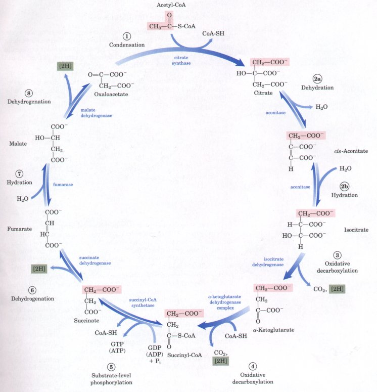
Figure 15-7 The reactions of the citric acid cycle. The carbon atoms shaded in red are those originally derived from the acetate of acetyl-CoA in the first turn of the cycle. These carbons are not the ones released as CO2 in the first turn. Note that in fumarate, the two-carbon group derived from acetate can no longer be specifically denoted; because succinate and fumarate are symmetric molecules, C-1 and C-2 are indistinguishable from C-4 and C-3. The number beside each reaction step corres onds to a numbered heading in the text. Steps l , 3, and 4 are essentially irreversible in the cell; all of the others are reversible.
In examining the eight successive reaction steps of the citric acid cycle, we will place special emphasis on the chemical transformations taking place as citrate formed from acetyl-CoA and oxaloacetate is oxidized to yield CO2 and the energy of this oxidation is conserved in the reduced coenzymes NADH and FADH2.
(l) Formation of Citrate The first reaction of the cycle is the condensation of acetyl-CoA with oxaloacetate to form citrate, catalyzed by citrate synthase:
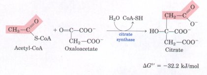
In this reaction the methyl carbon of the acetyl group is joined to the carbonyl group (C-2) of oxaloacetate.
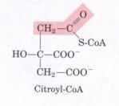
Citroyl-CoA is a transient intermediate. It is formed on the active site of the enzyme and rapidly undergoes hydrolysis to yield free CoA and citrate, which are then released from the active site. The hydrolysis of the high-energy thioester intermediate makes the forward reaction highly exergonic. The large, negative free-energy change associated with the citrate synthase reaction is essential to the operation of the cycle, because of the very low concentration of oxaloacetate normally present. The CoA formed in this reaction is recycled; it is ready to participate in the oxidative decarboxylation of another molecule of pyruvate by the pyruvate dehydrogenase complex to yield another molecule of acetyl-CoA for entry into the cycle.The citrate synthase from mitochondria has been crystallized and visualized by x-ray crystallography in the presence and absence of its substrates and inhibitors. Oxaloacetate, the first substrate to bind to the enzyme, induces a large conformational change, creating a binding site for the second substrate, acetyl-CoA. When citroyl-CoA forms on the enzyme surface, another conformational change brings the side chain of a crucial Asp residue into position to cleave the thioester. This induced fit of the enzyme first to its substrate and then to its intermediate decreases the likelihood of premature and unproductive cleavage of the thioester bond of acetyl-CoA.
| (2) Formation o f Isocitrate
via cis-Aconitate The enzyme aconitase
(more formally, aconitate hydratase)
catalyzes the reversible transformation of citrate to isocitrate,
through the intermediary formation of the tricarboxylic
acid cis-aconitate, which normally does
not dissociate from the active site. Aconitase can
promote the reversible addition of H2O to the double bond
of enzyme-bound cis-aconitate in two different ways, one
leading to citrate and the other to isocitrate: 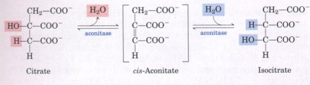 Although the equilibrium mixture at pH 7.4 and 25 °C contains less than 10% isocitrate, in the cell the reaction is pulled to the right because isocitrate is rapidly consumed in the subsequent step of the cycle, lowering its steady-state concentration. Aconitase contains an iron-sulfur center (Fig. 15-8), which acts both in the binding of the substrate at the active site and in catalysis of the addition or removal of H2O. |
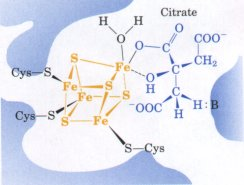 Fignre 15-8 The iron-sulfur center in aconitase acts in substrate binding and catalysis. Three Cys residues of the enzyme bind three iron atoms in the iron-sulfur center (yellow); the fourth iron is bound to one of the carboxyl groups of citrate (blue). : B represents a basic residue on the enzyme that helps to position the citrate in the active site. |
(3) Oxidation of Isocitrate to α-Ketoglutarate and CO2 In the next step isocitrate dehydrogenase catalyzes oxidative decarboxylation of isocitrate to form α-ketoglutarate:
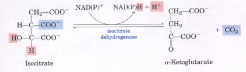
DG0'= -20.9 kJ/molThere are two different forms of isocitrate dehydrogenase (isozymes; see Box 14-3), one requiring NAD+ as electron acceptor and the other requiring NADP+ . The overall reactions catalyzed by the two isozymes are otherwise identical. The NAD-dependent enzyme is found in the mitochondrial matrix and serves in the citric acid cycle to produce a-ketoglutarate. The NADP-dependent isozyme is found in both the mitochondrial matrix and the cytosol. It may function primarily in the generation of NADPH, which is essential for reductive anabolic reactions.
(4) Oxidation of α-Ketoglutarate to Succinyl-CoA and CO2 The next step is another oxidative decarboxylation, in which a-ketoglutarate is converted to succinyl-CoA and O2 by the action of the a-ketoglutarate dehydrogenase complex; NAD+ serves as electron acceptor:
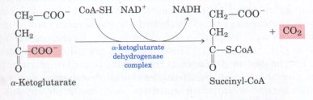
DG0'= -33.5 kJ/molThis reaction is virtually identical to the pyruvate dehydrogenase reaction discussed above; both involve the oxidation of an a-keto acid with loss of the carboxyl group as CO2. The energy of oxidation of a-ketoglutarate is conserved in the formation of the thioester bond of succinyl-CoA. In both structure and function the a-ketoglutarate dehydrogenase complex closely resembles the pyruvate dehydrogenase complex. It includes three enzymes, analogous to E1, E2, and E3 of the pyruvate dehydrogenase complex, as well as enzyme-bound TPP, bound lipoate, FAD, NAD, and coenzyme A. Although El of the aketoglutarate dehydrogenase complex is structurally similar to El of pyruvate dehydrogenase, their amino acid sequences are different; the El components specifically bind either a-ketoglutarate or pyruvate, conferring substrate specificity upon their respective enzyme complexes. The subunits of E3 for the two complexes are virtually identical. The E2 components of the two complexes are very similar; both have covalently bound lipoyl moieties. It is a near certainty that the proteins of these two multienzyme complexes share a common evolutionary origin.
(5) Conversion of Succinyl-CoA to Succinate Succinyl-CoA, like acetyl-CoA, has a strongly negative free energy of hydrolysis of its thioester bond (ΔG°' = -36 kJ/mol). In the next step of the citric acid cycle, energy released in the breakage of this bond is used to drive the synthesis of a phosphoanhydride bond in either GTP or ATP, and succinate is also formed in the process:
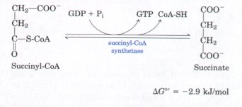
ΔG°'= -2.9 kJ/molThe enzyme that catalyzes this reversible reaction is called either succinyl-CoA synthetase or succinic thiokinase; both names indicate the participation of a nucleoside triphosphate in the reaction (Box 15-1). It was long thought that the enzyme from animal tissues used GDP exclusively, whereas that from plants and bacteria used predominantly ADP. It now appears that some animal cells contain two isozymes, one specific for ADP and the other for GDP.
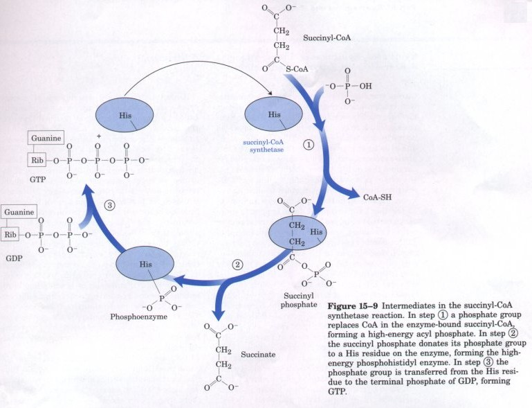
This energy-conserving reaction involves an intermediate step in which the enzyme molecule itself becomes phosphorylated at a His residue in the active site (Fig. 15-9). This phosphate group, which has a high group transfer potential, is transferred to ADP (or GDP) to form ATP (or GTP). The coupled formation of ATP (or GTP) at the expense of the energy released by the oxidative decarboxylation of α-ketoglutarate is another example of a substrate-level phosphorylation, like the synthesis of ATP coupled to the oxidation of glyceraldehyde- 3- phosphate in glycolysis (p. 411). These reactions are called substrate-level phosphorylations to distinguish them from oxidative or respirationlinked phosphorylation. Substrate-level phosphorylations involve soluble enzymes and chemical intermediates such as the phosphohistidine residue in succinyl-CoA synthetase, or 1,3-bisphosphoglycerate in the glycolytic pathway. Respiration-linked phosphorylation, on the other hand, involves membrane-bound enzymes and transmembrane gradients of protons (Chapter 18).
The GTP formed by succinyl-CoA synthetase may donate its terminal phosphate group to ADP to form ATP, by the reversible action of nucleoside diphosphate kinase:
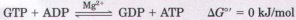
Thus the net result of the activity of either isozyme of succinyl-CoA synthetase is the conservation of energy as ATF. There is no change in free energy for the nucleoside diphosphate kinase reaction; ATP and GTP are energetically equivalent.
B O X 15-1Synthases, Synthetases, Ligases, Lyases, and Kinases: A Refresher on Enzyme NomenclatureCitrate synthase is one of many enzymes that catalyze condensation reactions, yielding a product more chemically complex than its precursors. Synthases catalyze condensation reactions in which no nucleoside triphosphate (ATP, GTP, etc. ) is required as an energy source. Synthetases also catalyze condensations, but this name is reserved for enzymes that do use ATP or another nucleoside triphosphate as a source of energy for the synthetic reaction. Succinyl-CoA synthetase is such an enzyme. Ligase (from the Latin ligare, meaning "to tie together") is the general name applied to those enzymes that catalyze condensation reactions in which two atoms are joined using the energy of ATP or another energy source. DNA ligase, for example, closes breaks in DNA molecules, using energy supplied by either ATP or NAD+; it is widely used in joining DNA pieces for genetic engineering (Chapter 28). Ligases are not to be confused with lyases, enzymes that catalyze cleavages (or, in the reverse directions, additions) in which electronic rearrangements occur. The pyruvate dehydrogenase complex, which oxidatively cleaves CO2 from pyruvate, is in this large class of enzymes. The name kinase is applied to those enzymes that transfer a phosphate group from a nucleoside triphosphate such as ATP to some acceptor moleculea sugar (as in hexokinase and glucokinase), a protein (as in glycogen phosphorylase kinase), another nucleotide (as in nucleoside diphosphate kinase), or a metabolic intermediate such as oxaloacetate (as in PEP carboxykinase). Unfortunately, these descriptions of enzyme types overlap, and many enzymes are commonly called by two or more names. Succinyl-CoA synthetase, for example, is also called succinate thiokinase; the enzyme is clearly both a synthetase in the citric acid cycle and a kinase when acting in the direction of succinyl-CoA synthesis. This raises another source of confusion in the naming of enzymes: an enzyme is sometimes discovered by the use of an assay of the conversion of, say, A to B and is named for that reaction, but later it is found to function in the cell primarily in converting B to A. Commonly, the first name continues to be used, although the metabolic role of the enzyme would clearly be better described by naming it for the reverse reaction. The enzyme pyruvate kinase (which acts in glycolysis) illustrates this situation (p. 413). To a beginner in biochemistry, this duplication in nomenclature can be bewildering. International committees have made heroic efforts to systematize the nomenclature of enzymes (see Table 8-3 for a brief summary of the system), but often the systematic names are so long and cumbersome that they are not frequently used in biochemical conversation. We have tried throughout this book to use the name most commonly used by working biochemists, and to point out cases in which a given enzyme has more than one widely used name. For an authoritative treatment of systematic enzyme nomenclature, see: Webb, E. (1984) Enzyme Nomenclature, Academic Press, Inc., Orlando, FL. |
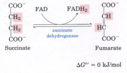
(6) Oxidation of Succinate to Fumarate The succinate formed from succinyl-CoA is oxidized to fumarate by the flavoprotein succinate dehydrogenase (right). In eukaryotes, succinate dehydrogenase is tightly bound to the inner mitochondrial membrane (in prokaryotes, to the plasma membrane); it is the only enzyme of the citric acid cycle that is membrane-bound. The enzyme from beef heart mitochondria contains three different iron-sulfur clusters as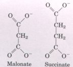
well as one molecule of covalently bound FAD. Electrons pass from succinate through the FAD and iron-sulfur centers before entering the chain of electron carriers in the mitochondrial inner membrane (or the plasma membrane of bacteria). Electron flow from succinate through these carriers to the final electron acceptor, O2, is coupled to the synthesis of two ATP molecules per pair of electrons (respiration-linked phosphorylation; Chapter 18). Malonate, an analog of succinate, is a strong competitive inhibitor of succinate dehydrogenase and therefore blocks the citric acid cycle.| (7) Hydration of Fumarate to
Produce Malate The reversible hydration of
fumarate to L-malate is catalyzed by fumarase
(fumarate hydratase): 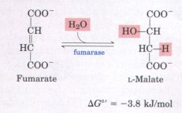 This enzyme is highly stereospecific; it catalyzes hydration of the trans double bond of fumarate but does not act on maleate, the cis isomer of fumarate. In the reverse direction (from L-malate to fumarate), fumarase is equally stereospecific: n-malate is not a substrate. |
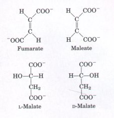 |
(8) Oxidation of Malate to Oxaloacetate In the last reaction of the citric acid cycle, NAD-linked L-malate dehydrogenase catalyzes the oxidation of L-malate to oxaloacetate:
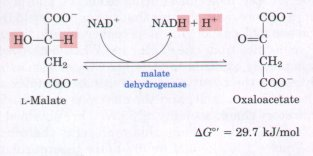
The equilibrium of this reaction lies far to the left under standard thermodynamic conditions. However, in intact cells oxaloacetate is continually removed by the highly exergonic citrate synthase reaction (p. 454). This keeps the concentration of oxaloacetate in the cell extremely low (< 10-6 M), pulling the malate dehydrogenase reaction toward oxaloacetate formation.